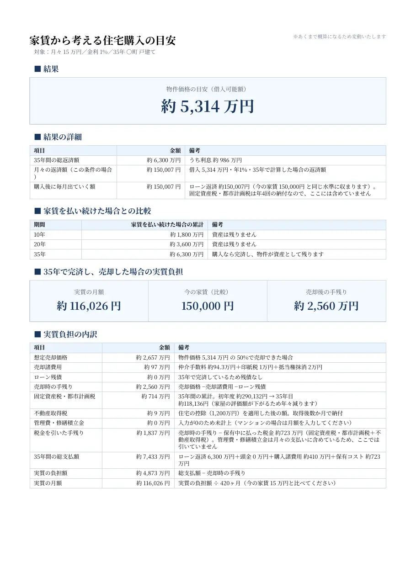
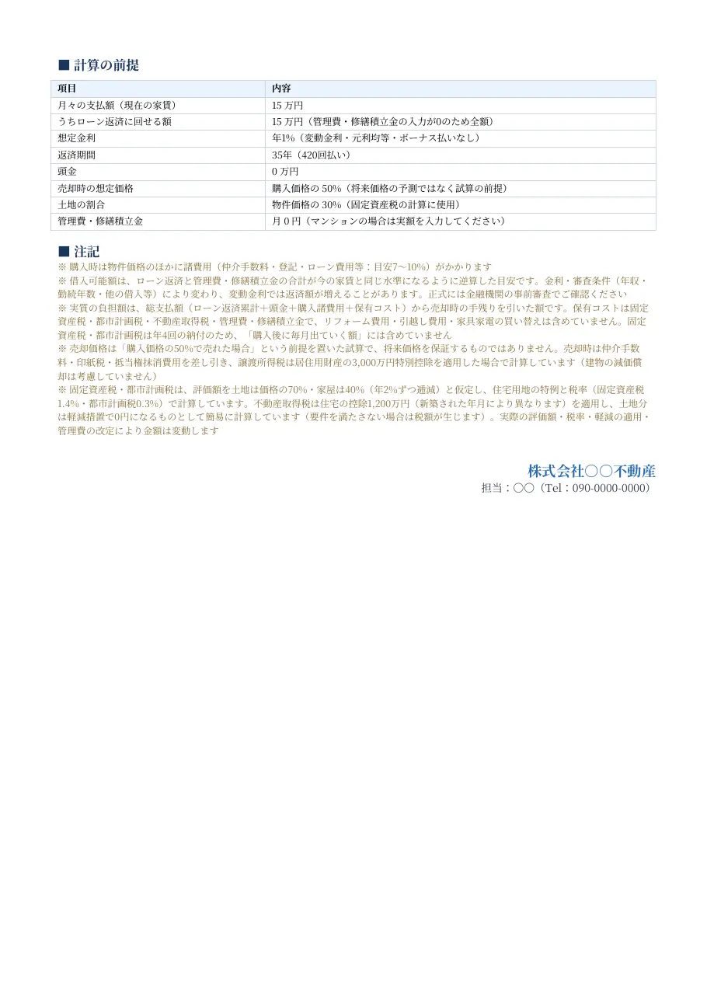

不動産会社・営業の方は

同じ毎月の支払いで買える家の価格、ローンを完済して売ったときの手残り、実質の家賃まで、金額を入れるだけで数秒で出せます。
「買ったほうがいいですか？」と聞かれたとき。
賃貸のお客様から聞かれたら、月々の支払額を聞くだけで、その場で比較の書類が出せます。賃貸の接客から売買のご相談へ、無理なくつなげる資料に。来店中や内見の帰りなど、お客様の関心が高いうちに渡せます。
今の家賃と同じ支払いで、いくらの物件が買えるか。家賃を払い続けた場合との比較と、完済して売ったときの実質の負担まで1つの書類に。

今の家賃を入れてみてください。同じ月々の支払いで買える物件価格の目安と、家賃を払い続けた場合に出ていく総額が並びます。
Sonaure で実際に出力した PDF です（月々 15万円・金利 1%・35年の例）。右下には貴社の社名と担当者のお名前が入り、Sonaure の名前は出ません。
見本の物件・会社・担当者は伏せています。金額は入力した条件での概算です。

入れるのは、月々の支払額（今の家賃）・金利・返済期間・頭金だけ。住所や物件の情報は要りません。
賃貸のお客様から聞かれたら、月々の支払額を聞くだけで、その場で比較の書類が出せます。賃貸の接客から売買のご相談へ、無理なくつなげる資料に。来店中や内見の帰りなど、お客様の関心が高いうちに渡せます。